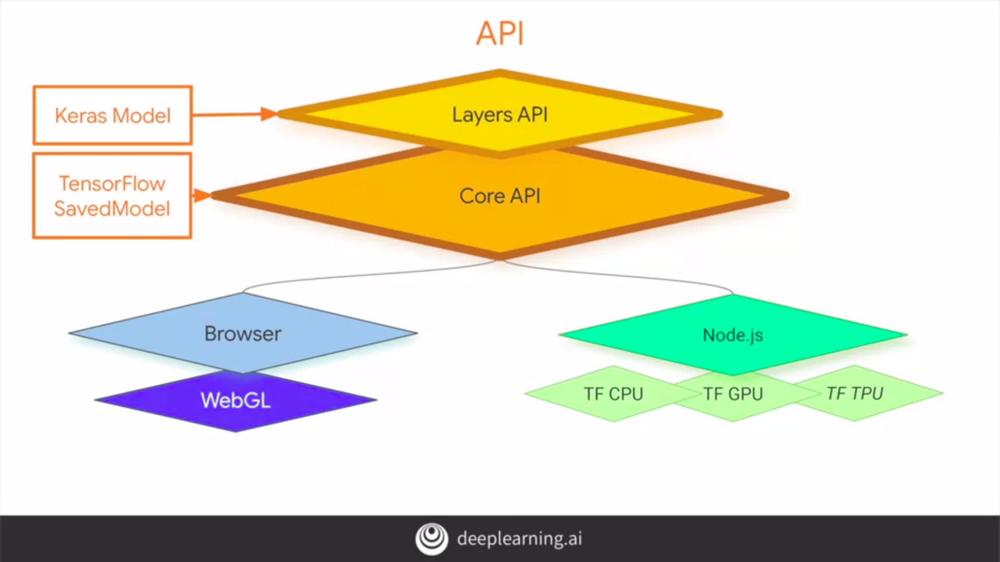
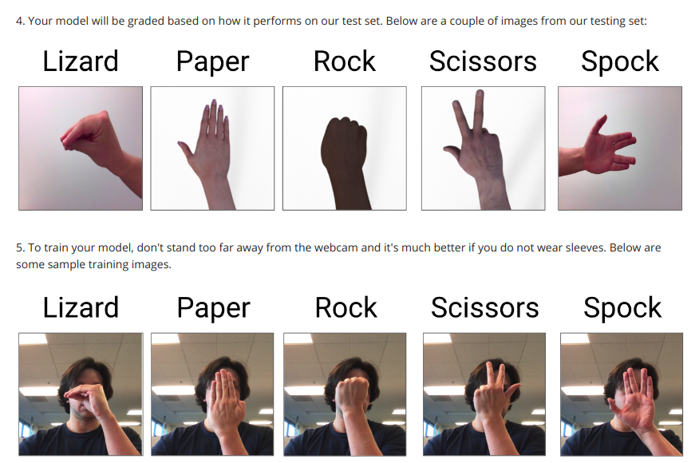

Browser Based Models With Tensorflow.js
One of the existing things about JS is that it allows us to do neural network training and inference right there in the web browser. So, it’s really cool that a user can upload a picture to a web browser or grab an image from a webcam and then have a neural network do training or inference right in the web browser without needing to send that image up to the cloud to be processed by a server.
Overview:
- Design and Architecture of TensorFlow.js
- Image Classification in the Browser
- Converting Models to JSON Format
- Transfer Learning with Pre-Trained Models
Design and Architecture of TensorFlow.js

The low-level APIs are called the core APIs. The Core API then works with the browser and can take advantage of WebGL for accelerated training and inference. Also on Node.js, we can build server-side or terminal applications using it. These can then take advantage of CPUs, GPUs, and TPUs depending on what's available to our machine.
// Here’s the code to use Tensoflow.js ..
<script src="https://cdn.jsdelivr.net/npm/@tensorflow/tfjs@latest"></script>
y equals 2x-1
We're going to build a model that infers the relationship between two numbers where y equals 2x minus 1 ( y = 2x − 1 ). So let's do that now in JavaScript
<html>
<head></head>
<script src="https://cdn.jsdelivr.net/npm/@tensorflow/tfjs@latest"></script>
<script lang="js">
// Training should be an asynchronous function because it will take an indeterminate time to complete.
// We don't want to block the browser while this is going on.
async function doTraining(model){
const history =
await model.fit(xs, ys,
{ epochs: 500,
callbacks:{
onEpochEnd: async(epoch, logs) =>{console.log("Epoch:"+ epoch + " Loss:" + logs.loss);}
}
});
}
// This code will define model. Model is sequential
const model = tf.sequential();
// The simplest possible neural network is one layer with one neuron.
//So we're only adding one dense layer
to our sequence.
model.add(tf.layers.dense({units: 1, inputShape: [1]}));
// We then compiled a neural network with a loss function and an optimizer. The loss function is Mean Squared
Error, which works really well in a linear relationship
model.compile({loss:'meanSquaredError',
optimizer:'sgd'});
// Outputs the summary of the model definition for us. We can see this in the console outputs.
model.summary();
// This is the data that we use to train the neural network. Tensor 2D has two one-dimensional arrays.
Training values are in one array, and the second array is the shape of those training values.
const xs = tf.tensor2d([-1.0, 0.0, 1.0, 2.0, 3.0, 4.0], [6, 1]);
const ys = tf.tensor2d([-3.0, -1.0, 2.0, 3.0, 5.0, 7.0], [6, 1]);
// Trining starts here
doTraining(model).then(() => {
// Once model trained.This is the prediction part. We can see alert message at our browser.
alert(model.predict(tf.tensor2d([10], [1,1])));
});
</script>
<body>
<h1>First HTML Page</h1>
</body>
</html>
Iris dataset
In previous example, data as numbers and arrays in memory. But more common scenarios are, data comes in from somewhere else, maybe a database connection or an imported dataset. In this example, we are going to read data from CSV files Iris dataset. TensorFlow.js gives us some tools that makes this much easier.
<html>
<head></head>
<script src="https://cdn.jsdelivr.net/npm/@tensorflow/tfjs@latest"></script>
<script lang="js">
async function run(){
// Use webserver to load data file. Change the URL accordingly.
const csvUrl = 'iris.csv';
const trainingData = tf.data.csv(csvUrl, {
columnConfigs: {
// Specify which column should be treated as label. Here "species".
species: {
isLabel: true
}
}
});
const numOfFeatures = (await trainingData.columnNames()).length - 1;
const numOfSamples = 150;
const convertedData =
trainingData.map(({xs, ys}) => {
// Convert the strings defined in the labels into a one hot encoded array of label values.
const labels = [
ys.species == "setosa" ? 1 : 0,
ys.species == "virginica" ? 1 : 0,
ys.species == "versicolor" ? 1 : 0
]
return{ xs: Object.values(xs), ys: Object.values(labels)};
}).batch(10);
6
// This code will define model. Model is sequential.
const model = tf.sequential();
model.add(tf.layers.dense({inputShape: [numOfFeatures], activation: "sigmoid", units: 5}))
model.add(tf.layers.dense({activation: "softmax", units: 3}));
model.compile({loss: "categoricalCrossentropy", optimizer: tf.train.adam(0.06)});
await model.fitDataset(convertedData,
{epochs:100,
callbacks:{
onEpochEnd: async(epoch, logs) =>{
console.log("Epoch: " + epoch + " Loss: " + logs.loss);
}
}});
// Test Cases:
// Setosa
const testVal = tf.tensor2d([4.4, 2.9, 1.4, 0.2], [1, 4]);
// Versicolor
// const testVal = tf.tensor2d([6.4, 3.2, 4.5, 1.5], [1, 4]);
// Virginica
// const testVal = tf.tensor2d([5.8,2.7,5.1,1.9], [1, 4]);
const prediction = model.predict(testVal);
const pIndex = tf.argMax(prediction, axis=1).dataSync();
const classNames = ["Setosa", "Virginica", "Versicolor"];
// alert(prediction)
alert(classNames[pIndex])
}
run();
</script>
<body>
</body>
</html>
Image Classification in the Browser
We started to learn the basics of the foundations of TensorFlow js syntax and saw how we can use it to
write code that runs in a web browser. We'll look at Computer Vision problems, including some of the
unique considerations when using JavaScript, such as handling thousands of images for training(using Sprite
sheet). By the end of this module we will know how to build a site that lets you draw in the browser and
recognizes your handwritten digits using convolutional neural networks. Also we’ll look at tf-vis to visualize
the output of callbacks.
Note :: Use tf.tidy() in TensorFlow.js. It cleans up intermediate tensors allocated by a function except those
return by a function.
Example - Handwriting Classifier
data.js
const IMAGE_SIZE = 784;
const NUM_CLASSES = 10;
const NUM_DATASET_ELEMENTS = 65000;
const TRAIN_TEST_RATIO = 5 / 6;
const NUM_TRAIN_ELEMENTS = Math.floor(TRAIN_TEST_RATIO * NUM_DATASET_ELEMENTS);
const NUM_TEST_ELEMENTS = NUM_DATASET_ELEMENTS - NUM_TRAIN_ELEMENTS;
const MNIST_IMAGES_SPRITE_PATH =
'https://storage.googleapis.com/learnjs-data/model-builder/mnist_images.png';
const MNIST_LABELS_PATH =
'https://storage.googleapis.com/learnjs-data/model-builder/mnist_labels_uint8';
/**
* A class that fetches the sprited MNIST dataset and returns shuffled batches.
*
* NOTE: This will get much easier. For now, we do data fetching and
* manipulation manually.
*/
export class MnistData {
constructor() {
this.shuffledTrainIndex = 0;
this.shuffledTestIndex = 0;
}
async load() {
// Make a request for the MNIST sprited image.
const img = new Image();
const canvas = document.createElement('canvas');
const ctx = canvas.getContext('2d');
const imgRequest = new Promise((resolve, reject) => {
img.crossOrigin = '';
img.onload = () => {
img.width = img.naturalWidth;
img.height = img.naturalHeight;
const datasetBytesBuffer =
new ArrayBuffer(NUM_DATASET_ELEMENTS * IMAGE_SIZE * 4);
const chunkSize = 5000;
canvas.width = img.width;
canvas.height = chunkSize;
for (let i = 0; i < NUM_DATASET_ELEMENTS / chunkSize; i++) {
const datasetBytesView = new Float32Array(
datasetBytesBuffer, i * IMAGE_SIZE * chunkSize * 4,
IMAGE_SIZE * chunkSize);
ctx.drawImage(
img, 0, i * chunkSize, img.width, chunkSize, 0, 0, img.width,
chunkSize);
const imageData = ctx.getImageData(0, 0, canvas.width, canvas.height);
for (let j = 0; j < imageData.data.length / 4; j++) {
// All channels hold an equal value since the image is grayscale, so
// just read the red channel.
datasetBytesView[j] = imageData.data[j * 4] / 255;
}
}
this.datasetImages = new Float32Array(datasetBytesBuffer);
resolve();
};
img.src = MNIST_IMAGES_SPRITE_PATH;
});
const labelsRequest = fetch(MNIST_LABELS_PATH);
const [imgResponse, labelsResponse] =
await Promise.all([imgRequest, labelsRequest]);
this.datasetLabels = new Uint8Array(await labelsResponse.arrayBuffer());
// Create shuffled indices into the train/test set for when we select a
// random dataset element for training / validation.
this.trainIndices = tf.util.createShuffledIndices(NUM_TRAIN_ELEMENTS);
this.testIndices = tf.util.createShuffledIndices(NUM_TEST_ELEMENTS);
// Slice the the images and labels into train and test sets.
this.trainImages =
this.datasetImages.slice(0, IMAGE_SIZE * NUM_TRAIN_ELEMENTS);
this.testImages = this.datasetImages.slice(IMAGE_SIZE * NUM_TRAIN_ELEMENTS);
this.trainLabels =
this.datasetLabels.slice(0, NUM_CLASSES * NUM_TRAIN_ELEMENTS);
this.testLabels =
this.datasetLabels.slice(NUM_CLASSES * NUM_TRAIN_ELEMENTS);
}
nextTrainBatch(batchSize) {
return this.nextBatch(
batchSize, [this.trainImages, this.trainLabels], () => {
this.shuffledTrainIndex =
(this.shuffledTrainIndex + 1) % this.trainIndices.length;
return this.trainIndices[this.shuffledTrainIndex];
});
}
nextTestBatch(batchSize) {
return this.nextBatch(batchSize, [this.testImages, this.testLabels], () => {
this.shuffledTestIndex =
(this.shuffledTestIndex + 1) % this.testIndices.length;
return this.testIndices[this.shuffledTestIndex];
});
}
nextBatch(batchSize, data, index) {
const batchImagesArray = new Float32Array(batchSize * IMAGE_SIZE);
const batchLabelsArray = new Uint8Array(batchSize * NUM_CLASSES);
for (let i = 0; i < batchSize; i++) {
const idx = index();
const image =
data[0].slice(idx * IMAGE_SIZE, idx * IMAGE_SIZE + IMAGE_SIZE);
batchImagesArray.set(image, i * IMAGE_SIZE);
const label =
data[1].slice(idx * NUM_CLASSES, idx * NUM_CLASSES + NUM_CLASSES);
batchLabelsArray.set(label, i * NUM_CLASSES);
}
const xs = tf.tensor2d(batchImagesArray, [batchSize, IMAGE_SIZE]);
const labels = tf.tensor2d(batchLabelsArray, [batchSize, NUM_CLASSES]);
return {xs, labels};
}
}
script.js
import {MnistData} from './data.js';
var canvas, ctx, saveButton, clearButton;
var pos = {x:0, y:0};
var rawImage;
var model;
function getModel() {
model = tf.sequential();
model.add(tf.layers.conv2d({inputShape: [28, 28, 1], kernelSize: 3, filters: 8, activation: 'relu'}));
model.add(tf.layers.maxPooling2d({poolSize: [2, 2]}));
model.add(tf.layers.conv2d({filters: 16, kernelSize: 3, activation: 'relu'}));
model.add(tf.layers.maxPooling2d({poolSize: [2, 2]}));
model.add(tf.layers.flatten());
model.add(tf.layers.dense({units: 128, activation: 'relu'}));
model.add(tf.layers.dense({units: 10, activation: 'softmax'}));
model.compile({optimizer: tf.train.adam(), loss: 'categoricalCrossentropy', metrics: ['accuracy']});
return model;
}
async function train(model, data) {
const metrics = ['loss', 'val_loss', 'acc', 'val_acc'];
const container = { name: 'Model Training', styles: { height: '640px' } };
const fitCallbacks = tfvis.show.fitCallbacks(container, metrics);
const BATCH_SIZE = 512;
const TRAIN_DATA_SIZE = 5500;
const TEST_DATA_SIZE = 1000;
const [trainXs, trainYs] = tf.tidy(() => {
const d = data.nextTrainBatch(TRAIN_DATA_SIZE);
return [
d.xs.reshape([TRAIN_DATA_SIZE, 28, 28, 1]),
d.labels
];
});
const [testXs, testYs] = tf.tidy(() => {
const d = data.nextTestBatch(TEST_DATA_SIZE);
return [
d.xs.reshape([TEST_DATA_SIZE, 28, 28, 1]),
d.labels
];
});
return model.fit(trainXs, trainYs, {
batchSize: BATCH_SIZE,
validationData: [testXs, testYs],
epochs: 20,
shuffle: true,
callbacks: fitCallbacks
});
}
function setPosition(e){
pos.x = e.clientX-100;
pos.y = e.clientY-100;
}
function draw(e) {
if(e.buttons!=1) return;
ctx.beginPath();
ctx.lineWidth = 24;
ctx.lineCap = 'round';
ctx.strokeStyle = 'white';
ctx.moveTo(pos.x, pos.y);
setPosition(e);
ctx.lineTo(pos.x, pos.y);
ctx.stroke();
rawImage.src = canvas.toDataURL('image/png');
}
function erase() {
ctx.fillStyle = "black";
ctx.fillRect(0,0,280,280);
}
function save() {
var raw = tf.browser.fromPixels(rawImage,1);
var resized = tf.image.resizeBilinear(raw, [28,28]);
var tensor = resized.expandDims(0);
var prediction = model.predict(tensor);
var pIndex = tf.argMax(prediction, 1).dataSync();
alert(pIndex);
}
function init() {
canvas = document.getElementById('canvas');
rawImage = document.getElementById('canvasimg');
ctx = canvas.getContext("2d");
ctx.fillStyle = "black";
ctx.fillRect(0,0,280,280);
canvas.addEventListener("mousemove", draw);
canvas.addEventListener("mousedown", setPosition);
canvas.addEventListener("mouseenter", setPosition);
saveButton = document.getElementById('sb');
saveButton.addEventListener("click", save);
clearButton = document.getElementById('cb');
clearButton.addEventListener("click", erase);
}
async function run() {
const data = new MnistData();
await data.load();
const model = getModel();
tfvis.show.modelSummary({name: 'Model Architecture'}, model);
await train(model, data);
init();
alert("Training is done, try classifying your handwriting!");
}
document.addEventListener('DOMContentLoaded', run);
mnist.html
<html>
<head>
<script src="https://cdn.jsdelivr.net/npm/@tensorflow/tfjs@latest"></script>
<script src="https://cdn.jsdelivr.net/npm/@tensorflow/tfjs-vis"></script>
</head>
<body>
<h1>Handwriting Classifier!</h1>
<canvas id="canvas" width="280" height="280" style="position:absolute;top:100;left:100;border:8px
solid;"></canvas>
<img id="canvasimg" style="position:absolute;top:10%;left:52%;width=280;height=280;display:none;">
<input type="button" value="classify" id="sb" size="48" style="position:absolute;top:400;left:100;">
<input type="button" value="clear" id="cb" size="23" style="position:absolute;top:400;left:180;">
<script src="data.js" type="module"></script>
<script src="script.js" type="module"></script>
</body>
</html>
Converting Models to JSON Format
We'll see how to take models that have been created with TensorFlow in Python and convert them to JSON format(using tensorflowjs converter) so that they can run in the browser using Javascript. We will start by looking at two models that have already been pre-converted. One of them is going to be a toxicity classifier, which uses NLP to determine if a phrase is toxic in a number of categories. The other one is Mobilenet which can be used to detect content in images. All of the inferences are then done locally, which is really cool for privacy and saving round tripping and all that.
Toxicity Classifier
Pre-trained toxicity classifier model available here.
<html>
<head>
<script src="https://cdn.jsdelivr.net/npm/@tensorflow/tfjs@latest"></script>
<script src="https://cdn.jsdelivr.net/npm/@tensorflow-models/toxicity"></script>
<script>
const threshold = 0.9;
toxicity.load(threshold).then(model => {
const sentences = ['you suck'];
model.classify(sentences).then(predictions => {
console.log(predictions);
for(i=0; i<7; i++){
if(predictions[i].results[0].match){
console.log(predictions[i].label +
" was found with probability of " +
predictions[i].results[0].probabilities[1]);
}
}
});
});
</script>
</head>
<body></body>
</html>
Image classification using Mobilenet
Mobilenet - Recent neural network architectures that was designed to run on mobile devices and on web browsers and low compute resource environments. We can see a list of classes supported by Mobilenet here
<html>
<head>
<script src="https://cdn.jsdelivr.net/npm/@tensorflow/tfjs@latest"> </script>
<script src="https://cdn.jsdelivr.net/npm/@tensorflow-models/mobilenet@1.0.0"> </script>
</head>
<body>
<img id="img" src="coffee.jpg"></img>
<div id="output" style="font-family:courier;font-size:24px;height=300px"></div>
</body>
<script>
const img = document.getElementById('img');
const outp = document.getElementById('output');
mobilenet.load().then(model => {
model.classify(img).then(predictions => {
console.log(predictions);
for(var i = 0; i<predictions.length; i++){
outp.innerHTML += "<br/>" + predictions[i].className + " : " + predictions[i].probability;
}
});
});
</script>
</html>
Models to JSON
linear.py
!pip install tensorflowjs
import numpy as np
import tensorflow as tf
import time
model = tf.keras.models.Sequential([
tf.keras.layers.Dense(units=1, input_shape=[1])
])
model.compile(optimizer='sgd', loss='mean_squared_error')
xs = np.array([-1.0, 0.0, 1.0, 2.0, 3.0, 4.0], dtype=float)
ys = np.array([-3.0, -1.0, 1.0, 3.0, 5.0, 7.0], dtype=float)
model.fit(xs, ys, epochs=500)
saved_model_path = "./{}.h5".format(int(time.time()))
model.save(saved_model_path)
!tensorflowjs_converter --input_format=keras {saved_model_path} ./
linear.html
<html>
<head>
<script src="https://cdn.jsdelivr.net/npm/@tensorflow/tfjs@latest"> </script>
<script>
async function run(){
const MODEL_URL = 'http://127.0.0.1:8887/model.json';
const model = await tf.loadLayersModel(MODEL_URL);
console.log(model.summary());
const input = tf.tensor2d([10.0], [1,1]);
const result = model.predict(input);
alert(result)
}
run();
</script>
</head>
<body></body>
</html>
Transfer Learning with Pre-Trained Models
We'll build a complete web site that uses TensorFlow.js, capturing data from the webcam, and re-training mobilenet to recognize Rock, Paper, Scissors, lizard and spoke gestures.
Recognize rock-paper-scissors-lizard-and-spoke gestures
Rock, Paper, Scissors, lizard, and spoke gestures (the-big-bang-theory)

webcam.js
class Webcam {
/**
* @param {HTMLVideoElement} webcamElement A HTMLVideoElement representing the
* webcam feed.
*/
constructor(webcamElement) {
this.webcamElement = webcamElement;
}
/**
* Captures a frame from the webcam and normalizes it between -1 and 1.
* Returns a batched image (1-element batch) of shape [1, w, h, c].
*/
capture() {
return tf.tidy(() => {
// Reads the image as a Tensor from the webcam <video> element.
const webcamImage = tf.browser.fromPixels(this.webcamElement);
const reversedImage = webcamImage.reverse(1);
// Crop the image so we're using the center square of the rectangular
// webcam.
const croppedImage = this.cropImage(reversedImage);
// Expand the outer most dimension so we have a batch size of 1.
const batchedImage = croppedImage.expandDims(0);
// Normalize the image between -1 and 1. The image comes in between 0-255,
// so we divide by 127 and subtract 1.
return batchedImage.toFloat().div(tf.scalar(127)).sub(tf.scalar(1));
});
}
/**
* Crops an image tensor so we get a square image with no white space.
* @param {Tensor4D} img An input image Tensor to crop.
*/
cropImage(img) {
const size = Math.min(img.shape[0], img.shape[1]);
const centerHeight = img.shape[0] / 2;
const beginHeight = centerHeight - (size / 2);
const centerWidth = img.shape[1] / 2;
const beginWidth = centerWidth - (size / 2);
return img.slice([beginHeight, beginWidth, 0], [size, size, 3]);
}
/**
* Adjusts the video size so we can make a centered square crop without
* including whitespace.
* @param {number} width The real width of the video element.
* @param {number} height The real height of the video element.
*/
adjustVideoSize(width, height) {
const aspectRatio = width / height;
if (width >= height) {
this.webcamElement.width = aspectRatio * this.webcamElement.height;
} else if (width < height) {
this.webcamElement.height = this.webcamElement.width / aspectRatio;
}
}
async setup() {
return new Promise((resolve, reject) => {
navigator.getUserMedia = navigator.getUserMedia ||
navigator.webkitGetUserMedia || navigator.mozGetUserMedia ||
navigator.msGetUserMedia;
if (navigator.getUserMedia) {
navigator.getUserMedia(
{video: {width: 224, height: 224}},
stream => {
this.webcamElement.srcObject = stream;
this.webcamElement.addEventListener('loadeddata', async () => {
this.adjustVideoSize(
this.webcamElement.videoWidth,
this.webcamElement.videoHeight);
resolve();
}, false);
},
error => {
reject(error);
});
} else {
reject();
}
});
}
}
index_exercise.js
let mobilenet;
let model;
const webcam = new Webcam(document.getElementById('wc'));
const dataset = new RPSDataset();
var rockSamples=0, paperSamples=0, scissorsSamples=0, spockSamples=0, lizardSamples=0;
let isPredicting = false;
async function loadMobilenet() {
const mobilenet = await
tf.loadLayersModel('https://storage.googleapis.com/tfjs-models/tfjs/mobilenet_v1_1.0_224/model.json');
const layer = mobilenet.getLayer('conv_pw_13_relu');
return tf.model({inputs: mobilenet.inputs, outputs: layer.output});
}
async function train() {
dataset.ys = null;
dataset.encodeLabels(5);
// In the space below create a neural network that can classify hand gestures
// corresponding to rock, paper, scissors, lizard, and spock. The first layer
// of your network should be a flatten layer that takes as input the output
// from the pre-trained MobileNet model. Since we have 5 classes, your output
// layer should have 5 units and a softmax activation function. You are free
// to use as many hidden layers and neurons as you like.
// HINT: Take a look at the Rock-Paper-Scissors example. We also suggest
// using ReLu activation functions where applicable.
model = tf.sequential({
layers: [
tf.layers.flatten({inputShape: mobilenet.outputs[0].shape.slice(1)}),
tf.layers.dense({ units: 100, activation: 'relu'}),
tf.layers.dense({ units: 5, activation: 'softmax'})
]
});
// Set the optimizer to be tf.train.adam() with a learning rate of 0.0001.
const optimizer = tf.train.adam(0.0001)
// Compile the model using the categoricalCrossentropy loss, and
// the optimizer you defined above.
model.compile({optimizer: optimizer, loss:"categoricalCrossentropy"});
let loss = 0;
model.fit(dataset.xs, dataset.ys, {
epochs: 10,
callbacks: {
onBatchEnd: async (batch, logs) => {
loss = logs.loss.toFixed(5);
console.log('LOSS: ' + loss);
}
}
});
}
function handleButton(elem){
switch(elem.id){
case "0":
rockSamples++;
document.getElementById("rocksamples").innerText = "Rock samples:" + rockSamples;
break;
case "1":
paperSamples++;
document.getElementById("papersamples").innerText = "Paper samples:" + paperSamples;
break;
case "2":
scissorsSamples++;
document.getElementById("scissorssamples").innerText = "Scissors samples:" +
scissorsSamples;
break;
case "3":
spockSamples++;
document.getElementById("spocksamples").innerText = "Spock samples:" + spockSamples;
break;
// Add a case for lizard samples.
// HINT: Look at the previous cases.
case "4":
lizardSamples++;
document.getElementById("lizardsamples").innerText = "lizardsamples samples:" + lizardSamples;
break;
}
label = parseInt(elem.id);
const img = webcam.capture();
dataset.addExample(mobilenet.predict(img), label);
}
async function predict() {
while (isPredicting) {
const predictedClass = tf.tidy(() => {
const img = webcam.capture();
const activation = mobilenet.predict(img);
const predictions = model.predict(activation);
return predictions.as1D().argMax();
});
const classId = (await predictedClass.data())[0];
var predictionText = "";
switch(classId){
case 0:
predictionText = "I see Rock";
break;
case 1:
predictionText = "I see Paper";
break;
case 2:
predictionText = "I see Scissors";
break;
case 3:
predictionText = "I see Spock";
break;
// Add a case for lizard samples.
// HINT: Look at the previous cases.
case 3:
predictionText = "I see lizard";
break;
}
document.getElementById("prediction").innerText = predictionText;
predictedClass.dispose();
await tf.nextFrame();
}
}
function doTraining(){
train();
alert("Training Done!")
}
function startPredicting(){
isPredicting = true;
predict();
}
function stopPredicting(){
isPredicting = false;
predict();
}
function saveModel(){
model.save('downloads://my_model');
}
async function init(){
await webcam.setup();
mobilenet = await loadMobilenet();
tf.tidy(() => mobilenet.predict(webcam.capture()));
}
init();
rpsis.html
<html>
<head>
<script src="https://cdn.jsdelivr.net/npm/@tensorflow/tfjs@latest"> </script>
<script src="webcam.js"></script>
<script src="rps-dataset.js"></script>
</head>
<body>
<div>
<div>
<video autoplay playsinline muted id="wc" width="224" height="224"></video>
</div>
</div>
<button type="button" id="0" onclick="handleButton(this)" >Rock</button>
<button type="button" id="1" onclick="handleButton(this)" >Paper</button>
<button type="button" id="2" onclick="handleButton(this)" >Scissors</button>
<button type="button" id="3" onclick="handleButton(this)" >Spock</button>
<button type="button" id="4" onclick="handleButton(this)" >Lizard</button>
<div id="rocksamples">Rock Samples:</div>
<div id="papersamples">Paper Samples:</div>
<div id="scissorssamples">Scissors Samples:</div>
<div id="spocksamples">Spock Samples:</div>
<div id="lizardsamples">Lizard Samples:</div>
<button type="button" id="train" onclick="doTraining()" >Train Network</button>
<div id="dummy">Once training is complete, click 'Start Predicting' to see predictions, and 'Stop Predicting'
to end. Once you are happy with your model, click 'Download Model' to save the model to your local disk.</div>
<button type="button" id="startPredicting" onclick="startPredicting()" >Start Predicting</button>
<button type="button" id="stopPredicting" onclick="stopPredicting()" >Stop Predicting</button>
<button type="button" id="saveModel" onclick="saveModel()" >Download Model</button>
<div id="prediction"></div>
</body>
<script src="index_exercise.js"></script>
</html>